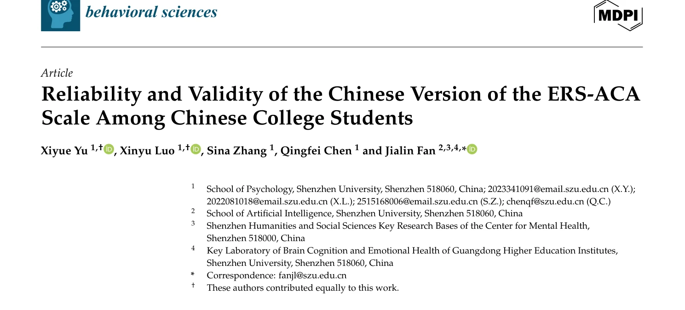
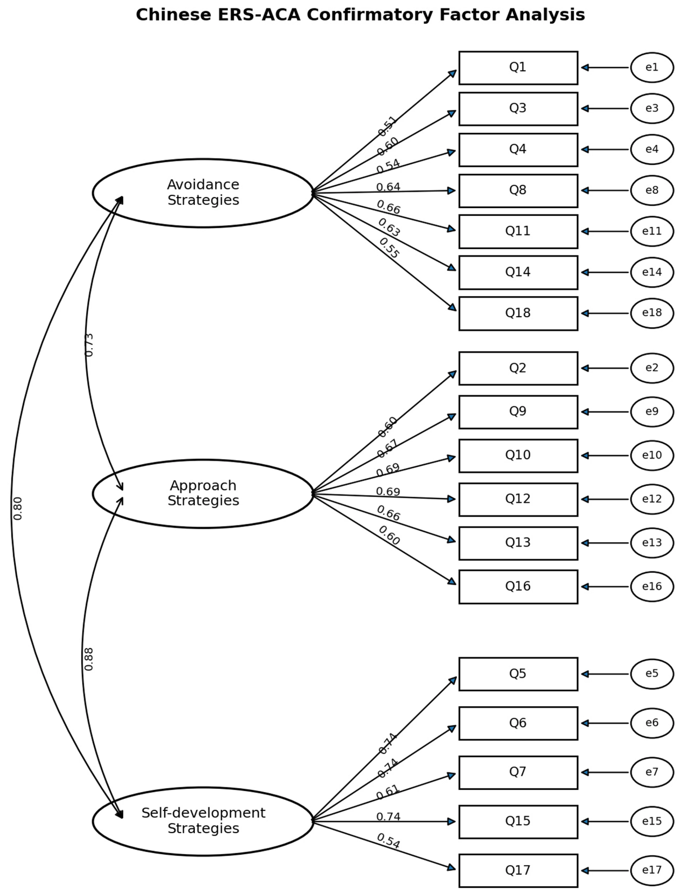
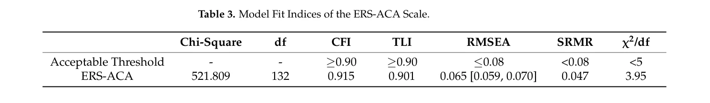
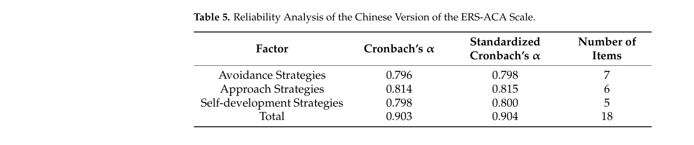
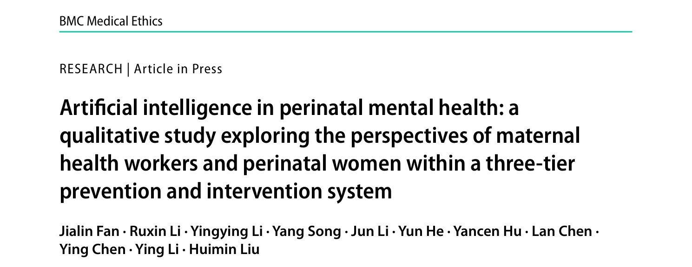
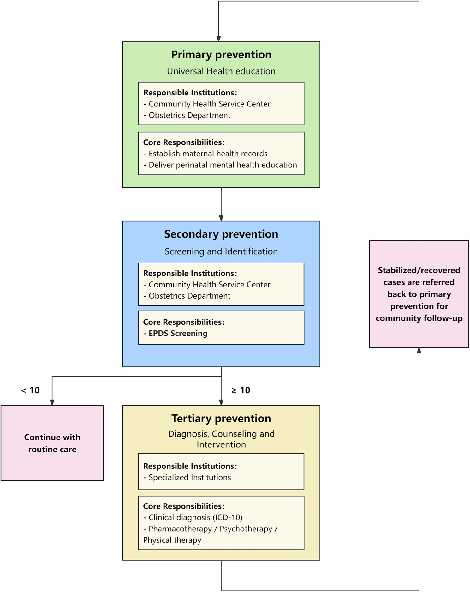
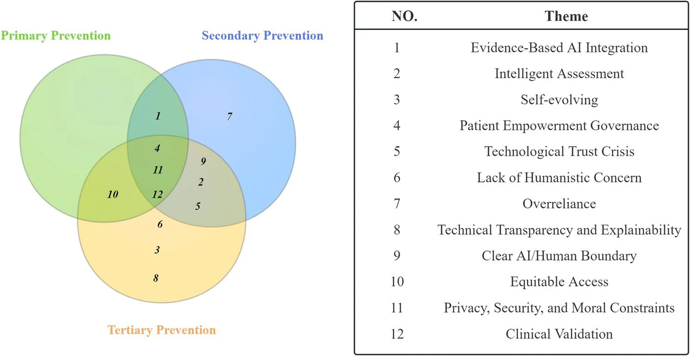
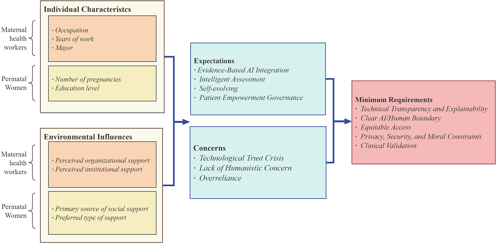

实验室名称：Occupational Health Psychology
研究方向
- 职业疲劳Occupational Fatigue
- 认知绩效Cognitive Performance
- 睡眠与清醒梦Sleep and Lucid Dream
- 轨道交通领域人因问题Human Factors in Railway Industry
- 人工智能在职业健康心理领域的应用AI in Occupational Health Psychology
定位 / 发展目标
【定位】
我们的定位是“职业健康的守护者，人因科技的创新者”。
面向人工智能深度融入工作、学习与生活场景的时代背景，课题组以人因安全与身心福祉为核心，聚焦职业环境与智能技术环境中人的心理、生理功能变化及其行为后果。我们关注职业疲劳、睡眠质量、认知绩效、安全行为、AI使用疲劳、AI信任与依赖、AI消费心理等关键问题，致力于揭示个体在高负荷、高风险和高智能化情境下的心理机制与适应规律。
课题组整合心理学理论、多模态生理与行为评估技术、人工智能数据建模方法，构建从风险识别、状态预测到精准干预的全链条研究体系。研究场景覆盖轨道交通、核电、数字化控制室等复杂人机协同系统，也延伸至AI工具使用、智能产品消费、数字健康管理与教育科技等新兴应用场景。通过研究职业疲劳与AI使用疲劳的生成机制、智能技术对认知绩效和决策行为的影响，以及消费者对AI产品的信任、接受与持续使用机制，课题组旨在为AI时代的职业健康保护、人机协同优化、智能产品设计与个体身心福祉提升提供科学依据。
【发展目标】
- 建设AI时代职业健康心理学研究高地：围绕职业疲劳、睡眠质量、认知表现、安全行为和AI使用疲劳开展系统研究，揭示智能化环境中的心理负荷、认知资源消耗与健康风险机制。
- 推动人因智能技术转化：结合轨道交通、核电和数字化控制室等真实需求，开发基于多模态数据和AI建模的绩效评估、疲劳识别与风险预警系统，服务重大行业安全。
- 拓展AI使用疲劳与数字心理健康研究：关注生成式AI和智能平台高频使用中的认知过载、技术焦虑、算法依赖、信任校准与人机边界感问题，为智能技术的健康使用和人本化设计提供依据。
- 探索AI消费心理与智能产品接受机制：研究用户对AI产品和智能服务的信任、风险感知、情感依附、付费意愿与持续使用行为，为AI产品设计、用户体验优化和负责任推广提供心理学支持。
- 发展艺术、科技与心理干预融合的新模式：深化音乐干预、表达性艺术治疗、清醒梦诱发和物理技术干预研究，结合智能评估技术，形成可量化、可推广的精准身心调节方案。
- 培养复合型应用心理学人才：培养具备心理学理论、数据分析能力、AI素养、人因工程意识和行业问题解决能力的复合型人才。
实验室设备
- PSG
- actigraph wgt3x-bt加速度计
- B & K 2245声级计
- tobii pro眼动仪
导师简介
范家琳
深圳市海外高层次人才 / 职业与健康心理 OHPsych 课题组 PI
研究方向：职业与健康心理学、人机交互、睡眠与疲劳、认知表现与身心健康
中国计算机学会人机交互专委会委员、广东省预防医学会健康促进与教育专业委员、深圳市中西医结合学会神经精神专委会委员，深圳市人文社科研究重点基地深圳大学心理健康研究中心成员，英国职业与健康心理研究中心成员、英国计算机学会会员、英国心理学会会员、中国人类工效学会会员、中国心理学会会员。2014 年 7 月于英国约克大学计算机学院获「以人为中心的交互技术」硕士学位，师从 Alistair Edward 教授、Paul Cairns 教授；2019 年 4 月于英国卡迪夫大学心理学院获博士学位，师从 Andrew P. Smith 教授。
研究领域主要为职业与健康心理学，研究职业因素对健康、睡眠和工作效率影响，涉及调查安全相关风险因素，探究生活方式和健康状况对认知表现、情绪、睡眠和生理功能的影响，并对清醒梦研究有兴趣。担任 SCI/SSCI 期刊 Applied Ergonomics、Fatigue Biomedicine Health & Behavior、Work、Mindfulness 等的审稿人。在国内外重要期刊以及国际会议上发表 SCI/SSCI/EI 检索论文二十余篇，其中，被引数 150+ 的论文 1 篇。
主要荣誉
- 2013年 英国约克大学 Langwith 学院奖
- 2017年 第一届精神工作量国际会议 优秀论文奖
- 2019年 深圳市人社局 海外高层次人才 C 类
- 2022年 深圳大学 & 腾讯基金会 腾讯益友奖
社会工作
- 广东省预防医学会健康促进与教育专业委员
- 深圳市中西医结合学会神经精神专委会委员
- 深圳市人文社科研究重点基地深圳大学心理健康研究中心成员
- 中国人类工效学会会员
- 中国心理学会会员
教学工作 （*为创新短课）
- 上半学期：《职业心理学》、《疲劳管理策略*》、《心理统计学（2）》、《心理学学术报告技巧》、《程序设计基础（C语言）》、《人工智能（通识课）》
- 下半学期：《职业生涯发展与咨询》、《设计心理学》、《疲劳管理策略*》
- 研究生课程：《高级心理测量》、《心理测量与评估》、《应用心理学专题》等；聚徒教学：《职业健康问题的心理学探讨》
联系方式
- E-mail：FanJL@szu.edu.cn
- 办公电话：0755-86581067
- 办公地点：深圳大学沧海校区致理楼 L3-12 楼
正在主持/参与的科研项目
纵向项目
- 职业疲劳对注意控制的影响及预测模型研究（2024—2027年，广东省基础与应用基础研究基金青年项目，主持）
- 表达性艺术治疗对大学生情绪调适的干预作用研究（2023—2026年，深圳市教育科学「十四五」规划2023年度课题，主持）
- 负性情绪影响推理过程的认知机制及干预研究（2024—2027年，教育部人文社科青年项目，参与）
- 预防人误：职业疲劳及其后效应（2020—2025年，深圳市高端人才启动项目，主持）
- 轨道交通行业职工的职业疲劳与福祉（2020—2023年，深圳大学科研启动项目，主持）
横向项目
- 基于光热的清醒梦诱发技术（2023—2028年，横向技术开发合作项目，主持）
- 数字化控制室操纵员绩效多模态智能评估技术研究（2023—2026年，中核领创项目，参与）
教学改革项目
- 整合「案例式+体验式」教学的心理剧本杀在《职业心理学》教学中的应用（2024—2026年，深圳大学教学改革项目，主持）
- 基于职业健康心理学的HSE管理对海洋生物工程员工心理健康及企业绩效的提升作用研究（2024—2026年，教育部供需对接就业育人项目，主持）
论文发表
- 论文列表暂未加载
主要成员
硕士生
本科生
成员成果




论文发表于 Behavioral Sciences：中文版 ERS-ACA 量表在中国大学生群体中的信效度检验
2026年9月，OHPsych课题组导师范家琳老师携余熙悦、张思娜等成员撰写的论文《Reliability and Validity of the Chinese Version of the ERS-ACA Scale Among Chinese College Students》在 Behavioral Sciences 发表。该刊为 SCIE/SSCI 双收录期刊，JCR Q1，中科院心理学大类 3 区，影响因子 3.2。
艺术创作活动（Artistic Creative Activities, ACAs）是个体调节情绪的重要途径，但人们在创作过程中究竟使用了哪些情绪调节策略，需要合适的测量工具来刻画。课题组此前已将情绪调节策略量表（ERS-ACA）引入中文语境，并在艺术设计类专业学生中完成过一版 17 题的修订。
本研究以 885 名来自多个学科专业的大学生为样本，对完整的 18 题中文版 ERS-ACA 作系统的心理测量学检验，同时施测情绪调节问卷（ERQ）与学生幸福感过程问卷（Student-WPQ）作为效标，考察量表的结构效度、效标关联效度与内部一致性。
结果显示，验证性因子分析支持原有的三因子结构——回避策略、趋近策略与自我发展策略，模型拟合良好（CFI = 0.915，TLI = 0.901，RMSEA = 0.065，SRMR = 0.047）。总量表 Cronbach's α 为 0.903，三个分量表介于 0.796–0.814，内部一致性良好。三个维度与认知重评、积极幸福感、积极人格呈正相关，而与表达抑制的关联较弱或不显著。
研究说明，艺术创作活动中的情绪调节策略与日常习惯性的情绪调节、积极心理功能既相互关联又彼此区分；完整的 18 题中文版 ERS-ACA 在跨学科大学生样本中具备良好的结构效度、效标关联效度与信度，为后续在表达性艺术治疗与高校心理健康教育场景中的应用提供了测量基础。
研究亮点：
- 以 885 名跨学科大学生为样本，检验完整 18 题中文版 ERS-ACA 的心理测量学特性。
- 验证性因子分析支持回避、趋近、自我发展三因子结构，模型拟合良好。
- 总量表 Cronbach's α 达 0.903，三个分量表 α 为 0.796–0.814。
- 三维度与认知重评、积极幸福感、积极人格正相关，与表达抑制关联较弱。
- 相较此前针对艺术设计类专业学生的 17 题修订版，完整 18 题结构在多学科样本中得到支持。




论文发表于 BMC Medical Ethics：人工智能在围产期心理健康中的应用——基于深圳三级预防与干预体系的定性研究
2026年8月，OHPsych课题组导师范家琳老师携李如欣、李盈莹等成员，与深圳市妇幼保健院等单位合作撰写的论文《Artificial intelligence in perinatal mental health: a qualitative study exploring the perspectives of maternal health workers and perinatal women within a three-tier prevention and intervention system》被 BMC Medical Ethics 接收发表。该刊为 SCI/SSCI 双收录期刊，JCR Q1，中科院哲学大类 1 区。
研究立足深圳三级围产期心理健康预防与干预体系，采用定性研究设计，并对各主题的出现频次做探索性量化分析。团队对 41 位受访者开展半结构化访谈，其中 23 名为围产期心理健康服务人员（MHWs），18 名为围产期女性。
结果发现，两类人群的伦理优先关切存在明显分歧：医护人员更看重临床效度、诊断可靠性与体系的可落地性，围产期女性则更强调数据隐私、个性化照护与服务的公平可及。但双方高度一致地认为，人工智能应作为增强评估能力的辅助工具，与人类的关系性照护形成互补，而不是取而代之。
研究据此提出一个面向 AI 融入围产期心理健康的双主体框架，围绕四大支柱展开——智能评估、公平可及、工具治理与临床验证。研究强调，负责任的落地应以其「是否强化而非替代专业判断、患者自主与人文关怀」作为评价标准，为围产期心理健康领域的 AI 伦理治理与系统设计提供了来自中国本土防治体系的初步实证依据。
研究亮点：
- 在深圳三级围产期心理健康防治体系中，同步纳入医护人员与围产期女性双主体视角。
- 41 人半结构化访谈，定性分析与主题频次探索性量化相结合。
- 揭示双方伦理优先级的差异：临床责任（服务方）与个性化自主（患者方）之间的张力。
- 提出智能评估、公平可及、工具治理、临床验证四大支柱框架。
- 明确 AI 的定位是「增强」而非「替代」人类的关系性照护。

马光裕
基于 CARLA 的自动驾驶车辆接管实验仿真程序
本平台基于 CARLA 自动驾驶模拟器开发，专门用于开展自动驾驶接管（Take-Over Request, TOR）的人因工程研究。该程序运行于 CARLA 仿真环境，能够模拟复杂的背景交通流，不同天气状况，并在特定场景下精确触发故障、诱导接管。
核心功能
- 高沉浸感视野：采用 21:9 超宽视角显示，并集成左、中、右三路数字化后视镜，真实还原驾驶员视野，提供良好的生态效度。
- 实验自动化：支持从编号录入、场景初始化、障碍物自动生成到数据自动保存的全流程自动化。
- 多维数据采集：系统可实时记录驾驶员接管反应时间（RT）、接管完成时间（TT）以及车道保持精度（SDLP）等关键安全性指标，并自动导出数据。


论文发表于 Behavioral Sciences：中西方古典音乐对大学生认知任务诱发脑力疲劳的影响
2026年2月，OHPsych课题组导师范家琳老师携研究生谭舒月、李如欣及本科生张乐怡，合作论文《中西方古典音乐对大学生认知任务诱发脑力疲劳的影响》发表于SSCI Q2期刊 Behavioral Sciences。
研究通过实验室疲劳诱发范式，比较中国传统音乐、西方古典音乐与无音乐条件对大学生心理疲劳的影响。结果发现，两类音乐均能帮助维持认知警觉性、保护反应速度并稳定情绪状态，且干预效果无显著差异。该研究为中国传统音乐在心理疲劳干预中的应用价值提供了实验心理学证据。
研究亮点：
- 比较中国传统音乐与西方古典音乐对心理疲劳的干预效果。
- 采用主观量表、日记记录与PVT任务进行多维度评估。
- 发现两类音乐均能保护警觉性、反应速度和情绪状态。
- 为中国传统音乐在疲劳缓解与心理干预中的应用提供实证支持。


论文发表于 Noise & Health：噪音敏感性、睡眠问题与心理健康
近期，OHPsych课题组本科生陈裕洋、郑斯瑶、刘玉婷与导师范家琳合作撰写的论文《Effect of Noise Sensitivity on Mental Health: Mediating Role of Sleep Problems》发表于SCI期刊 Noise & Health。
该研究关注噪音敏感性对大学生心理健康的影响，并进一步检验睡眠问题在噪音敏感性影响焦虑、抑郁过程中的中介作用。研究以深圳大学268名学生为对象，采用WNSS-8噪音敏感量表、PHQ-4患者健康问卷和JSS-4睡眠量表进行问卷调查。
研究发现，噪音敏感性与焦虑、抑郁和睡眠问题均呈显著正相关；噪音敏感性能够预测睡眠问题、焦虑和抑郁；睡眠问题在噪音敏感性与焦虑、抑郁之间起到中介作用。该研究为理解环境噪音易感性、睡眠质量与心理健康之间的关系提供了实证依据，也为高校学生心理健康评估和睡眠干预提供了参考。
研究亮点：
- 探讨噪音敏感性对焦虑、抑郁和睡眠问题的影响。
- 以睡眠问题作为中介变量，解释噪音敏感性影响心理健康的潜在机制。
- 使用WNSS-8、PHQ-4和JSS-4进行多变量问卷评估。
- 为高校学生心理健康筛查、睡眠干预和噪音环境管理提供实证支持。
招生信息
实验室欢迎认知、社会、临床、发展等方向的硕士及博士申请者加入。拥有良好的学术能力与科研兴趣，具备创新思维和团队协作精神者优先。具体招生章程及联系方式请参见学院年度招生简章，或通过邮箱 FanJL@szu.edu.cn 咨询。
OHPsych课题组诚聘科研助理
应聘条件
- 国（境）内外知名高校毕业，获得心理学或计算机科学等相关专业硕士学位；
- 熟悉SPSS、Nvivo等分析软件，有大规模调研项目参与经历、数据处理或编程相关经验；
- 有较强的英语阅读、写作能力，在CSSCI、SSCI、SCI等杂志上至少发表1篇第一作者/通讯作者文章；
- 具有良好的团队合作精神、沟通协调和组织能力；
- 有严谨的科学态度，遵守学术道德规范，身体健康。
岗位及工作内容
- 工作岗位：研究助理。
- 工作内容：专职从事科学研究工作并发表高质量学术论文、协助申报科研课题与项目管理工作。
- 聘用期限：1-2年（试用期1-2个月）。
聘期待遇
- 获聘人员将享受深圳大学研究助理待遇，享受深圳大学相关社保及公积金。工资薪酬实行年薪制，由课题组按月发放，具体工资待遇根据学历、工作经历、技术能力等确定。
- 获聘的研究人员除了深圳大学的收入，还可以个人申请深圳市政府的各项补贴。深圳市对符合条件的新引进入户的全日制硕士提供2.5万、博士3万的一次性租房和生活补贴。同时，还可以申请「人才住房」。符合深圳市政府「孔雀计划」或后备级人才的还可申请相应的引进人才补贴。深圳市孔雀计划或后备级人才最低补贴160万。
应聘者请提供以下材料电子版
- 个人简历（pdf）；
- 学历、学位证明扫描件（pdf）；
- 科研成果（包括代表性论文；pdf）；
- 其他说明个人能力特长的材料（pdf）。
* 请将以上文件放置在一个压缩文件中。
应聘程序
- 将上述材料发到指定邮箱；
- 经过初筛后需进行面试；
- 面试结束后经学校审批再通知是否聘用。
招聘方会对申请人递交的应聘材料予以保密。
联系方式
请应聘者将材料发送至以下邮箱：FanJL@szu.edu.cn。邮件主题标注为申请岗位的名称+姓名，例如「研究助理申请+张三」。
本科生招生
如果你对心理学在真实世界的应用充满好奇，具备快速学习新工具的能力，并能持之以恒地投入研究，欢迎申请加入我们的课题组，你将收获：
- 真实科研实战：参与具有应用意义的科研项目；
- 公正的署名机会：按贡献分配文章作者位次。课题组内有多位本科生在JCR Q2文章中独立一作，或第二、第三作者；
- 升学/求职强援：申研/工作推荐信（中/英）；
- 来自学姐学长的热情帮助，少走弯路；
- 温馨氛围：组会奶茶煡饮，不定时聚餐掉落~
申请指南
请准备申请材料清单，发送邮件至 FanJL@szu.edu.cn。